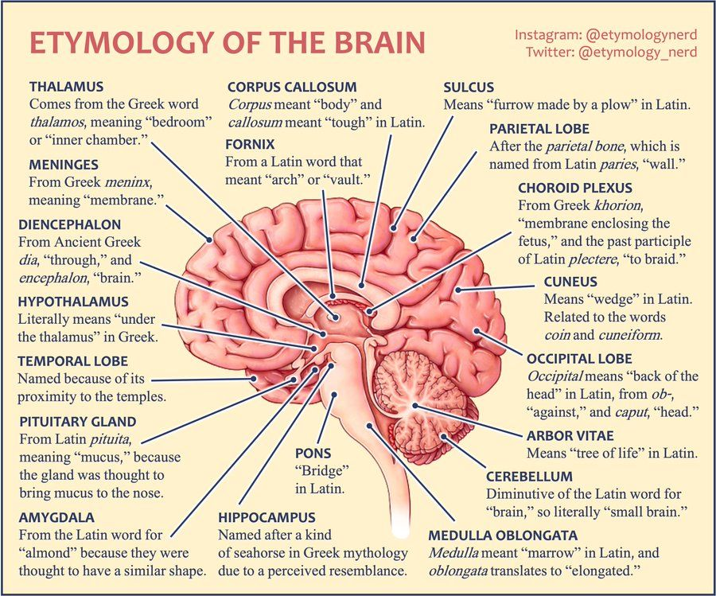

Basic Neuroanatomy
Welcome to the first lesson studying the most powerful and intelligent computer known to date – the brain. We will begin by studying what exactly it is. This is called neuroanatomy, and luckily for us, MIT OpenCourseware has a fabulous lecture on exactly that, which we will pair with some nice quick overviews from none other than Mr. Paul Andersen. In addition, we will attempt to tie in topics from the deep learning unit to get you thinking more about NeuroAI. Have a look!
Literacy & Technical Track Content
Task 1:
Watch the videos below, and answer any synthesis questions placed along the way.

First, we will begin with Mr. Andersen’s lovely introduction to the structure of the foundation of our biological computation: the neuron!
Video 1: The Neuron!
Synthesis Questions:
Recall the main parts of a neuron and list their functions. Write 1 sentence for each.Fill out the following sentence: An action potential travels from the direction of the __, along the __, before reaching the __.What happens if a neuron becomes unmyelinated?What is a synapse? What does it do?Now that you understand the basics of a biological neuron, how is it similar/different to a neuron in a Neural Network? Feel free to review content from Unit 2 if needed.
Bonus Video: If you are interested in the gritty details of how computation works biologically, I suggest this video as a bonus: The Action Potential (the brain is like a salty banana!)
Next, a crash course on the large modules of the brain before we go even deeper into the amazing functions of the brain.
Video 2: The Brain: Structure and Function
Synthesis Questions:
What distinguishes the forebrain, midbrain, and hindbrain?What are several parts of the midbrain and what are their functions?How did we discover what function(s) certain areas of the brain have?What are the 4 lobes of the brain and their general functions? Write 2 sentences for each.
Watch and understand this beautiful lecture, then answer the synthesis questions provided below.
Video 3: MIT Neuroanatomy Lecture
Synthesis Questions:
What are the four major parts of the brain?Summarize the main functions of each of the four major components above, or jot down some details about eachWhat is a receptive field?Describe characteristics of a cortical area. Find your favorite cortical area not described in the lecture and describe some things that make it interesting :)
Congratulations! That was a lot of neuroscience! On to some more creative ways of learning in the project section.
Task 2:
Complete the following writing activity.
There is no programming for this project. Instead, we have provided a $\LaTeX$ template for you to fill out.
- If you are unaware of what $\LaTeX$ is, you can read about it here.
I would recommend taking a look at Overleaf to edit/compile $\LaTeX$ code. Simply copy the code in the template into a blank
Overleaf project and type your answers into the TODO areas. Be sure to hit the “Recompile” button to see your work.
Since this is the “project” section of the unit, your responses to the questions we provide should be more complex than your responses to the synthesis questions.
GH Link: Unit 3 Template (30 min)
The questions in the template are also written below:
Unfortunately, we have neither brains nor creatures for you to dissect. However, for this project, we will be asking you to use your imagination and newfound biological and artificially-intelligible knowledge to
- Describe several advantages and disadvantages of biological computation with the brain compared to machine learning
- Speculate what aspects of the architecture of the brain may cause these advantages or disadvantages, and similarly comment on aspects of machine learning’s architecture
- Brainstorm some marvelous schemes for integrating advantages from both ways of computing. Draw, write, scribble etc… When you are done, do a quick google for your best ideas to see if anyone has researched or tried them already!
Whatever you are able to conjure up, have something to show for it to demonstrate your knowledge about basic neuroanatomy!